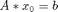
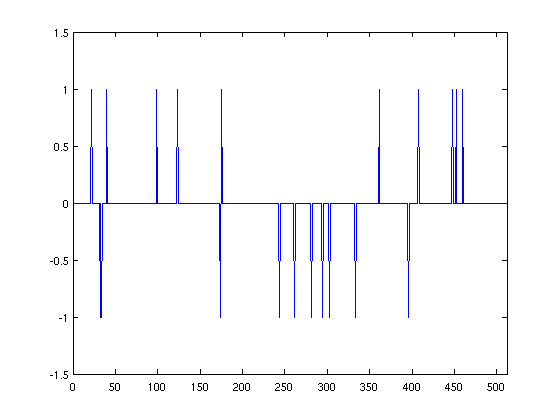
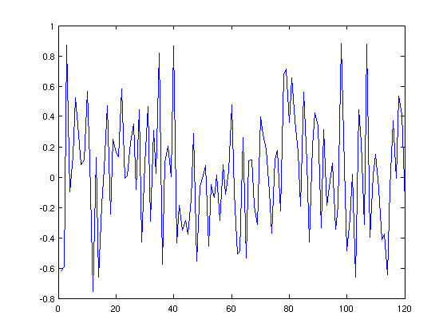
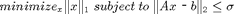
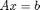
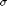
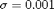
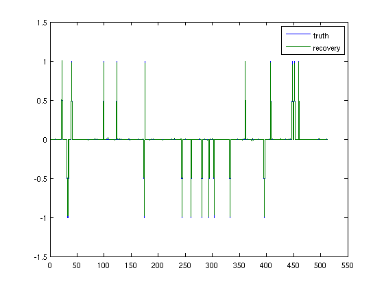

Sparse Recovery
One of Spot's major applications is compressed sensing. In compressed sensing, a sparse signal (one with only a few nonzero values) is sampled below the Nyquist rate, but with a particular sampling method that allows it to be reconstructed later. This enables measurements that are faster and consume less memory. For example, a 2007 paper by Lustig et al. showed that MRI images can be acquired five times as fast using compressed sensing techniques.
Some signals are inherently sparse (sparse in the Dirac basis), such as images that only have a few nonzero pixel values. However, compressed sensing has a wide range of applications because many signals can be made sparse through particular transforms; for example, the Fourier transform of a sine wave is very sparse because the wave only contains one frequency. In this example, we will simply create a generic sparse signal.
If we sample the signal (represented by the vector x0) using a matrix A, we get the smaller vector b:

b must be smaller than x, otherwise no compression of the signal has occured. This means that the matrix A must have fewer rows than columns, and the system is "underdetermined", having more unknowns than equations. This usually means that the vector b is not unique, and if we try to solve the system for x0 using A and b, we will get many different solutions. However, in compressed sensing, we can guarantee that that we will be able to solve the system to recover the original signal. This guarantee requires two things: first, the signal must be sparse, and second, we must use a special kind of measurement matrix. Most of these special matrices satisfy the "Restricted Isometry Property".
In this example, we will demonstrate how to create the measurement matrix A as a Spot operator, use it to take measurements of a sparse signal, then reconstruct the signal using a basis pursuit solver called SPGL1.
Contents
Creating an Example Signal
Let's create a sparse signal that we can measure and reconstruct. We will create a "spike train" signal, which only has -1 and 1 magnitudes. Our signal will have k nonzero values out of n values.
n = 512; k = 20;
Create a random permutation of the integers 1 to n; the first k of these will be the indices of the signal's nonzero values.
p = randperm(n);
Initialize the signal x0 as a column vector of n zeros. Set the designated nonzero values to be randomly 1 or -1:
x0 = zeros(n,1); x0(p(1:k)) = sign(randn(k,1));
Plot the resulting signal:
figure(1); plot(1:n, x0); axis([0 512 -1.5 1.5]);
Taking Measurements
Now that we have a signal, we have to create the measurement matrix to sample it. Gaussian matrices, which have entries randomly chosen from the Gaussian (or normal) distribution, satisfy the Restricted Isometry Property. We will use one for our measurement matrix. It must have n columns (the number of rows in the signal vector x0), but the number of rows is our choice. Each row in the measurement matrix represents a single measurement, as it will produce a single entry in the resulting vector. As a rule of thumb, the number of measurements should be about five times as large as the number of nonzero values; we'll use six times:
m = 120;
Instead of an explicit matrix, we can use a Spot opGuassian operator. Using mode 2 of opGaussian creates an implicit Gaussian matrix. This means that the columns of the matrix are generated as the operator is applied, so that we never have to store the entire matrix.
A = opGaussian(m,n,2)
A =
Spot operator: Gaussian(120,512)
rows: 120 complex: no
cols: 512 type: Gaussian
To take our measurements, we simply have to apply A to x0. Our new vector b has m entries. We will also add some random noise:
b = A*x0 + 0.005 * randn(m,1);
This is what our compressed data looks like:
figure(); plot(1:m, b)
Reconstructing the Signal
We have stored our signal as the vector b; let's try to recover it using A. We will use a solver called SPGL1, which solves the following basis pursuit denoising problem:

The second half of this problem is our condition that x actually satisfies the equation  within some range represented by . Minimizing the 1-norm of x gives us the sparsest x that meets this condition.
First we will set our "optimality tolerance" to 0.0001. This means that the solution that the solver finds is guaranteed to be within 0.01% of the optimal solution.
opts = spgSetParms('optTol', 1e-4, 'verbosity', 1);
Next we simply pass A, b, , and our parameters to the SPGL1 solver:
[x,r,g,info] = spg_bpdn(A,b,1e-3,opts);
================================================================================
SPGL1 v. 83 (Mon, 09 Jul 2012)
================================================================================
No. rows : 120 No. columns : 512
Initial tau : 0.00e+00 Penalty : funLS
Regularizer : NormL1_primal Penalty(b) : 4.41e+00
Optimality tol : 1.00e-04 Target objective : 1.00e-03
Basis pursuit tol : 1.00e-06 Maximum iterations : 1200
Iter Objective Relative Gap Rel Error gNorm stepG nnzX nnzG tau
0 4.4145549e+00 0.0000000e+00 1.00e+00 3.240e-01 0.0 0 0 1.3623864e+01
19 1.2988313e+00 5.8673028e-01 9.99e-01 2.092e-01 -0.3 34 3 1.9827784e+01
90 5.0487018e-02 3.1680333e+00 4.95e-02 1.681e-01 0.0 52 1 2.0122188e+01
121 8.7264744e-03 3.1558246e+00 7.73e-03 1.578e-01 -0.9 101 1 2.0171137e+01
218 2.4306183e-03 2.7165079e+00 1.43e-03 1.350e-01 -0.3 106 0 2.0181737e+01
257 1.1749222e-03 2.5965813e+00 1.75e-04 1.288e-01 -0.6 108 0 2.0183096e+01
258 1.0259731e-03 2.5378135e+00 2.60e-05 1.258e-01 0.0 108 2
EXIT -- Found a root
Products with A : 400 Total time (secs) : 0.6
Products with A' : 259 Project time (secs) : 0.1
Newton iterations : 6 Mat-vec time (secs) : 0.2
Line search its : 141 Subspace iterations : 0
You can see that the solver stopped once the relative error became less than 0.0001. Let's plot the reconstruction, x, with the original signal, x0:
figure(2); plot(1:n, x0, 1:n, x); axis([0 550 -1.5 1.5]); legend('truth', 'recovery');
The signal and reconstruction overlap almost completely, so our reconstruction is accurate.